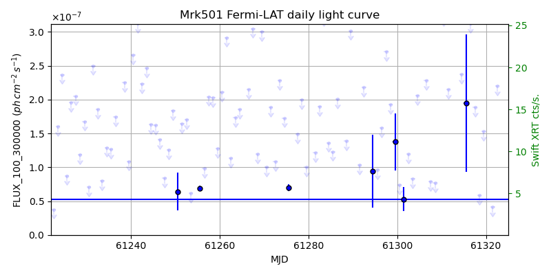
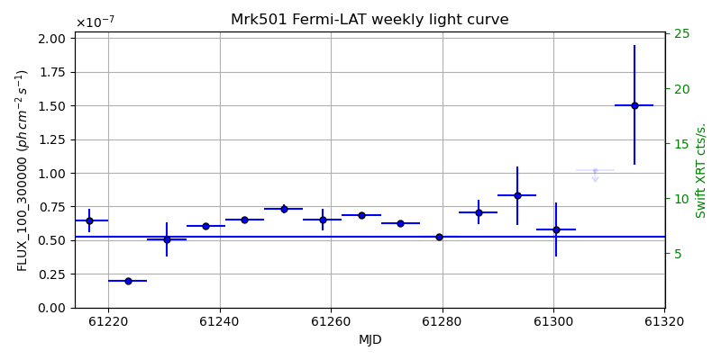
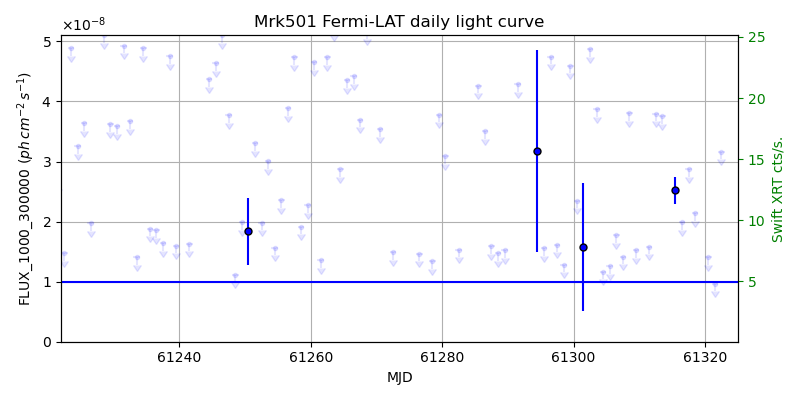
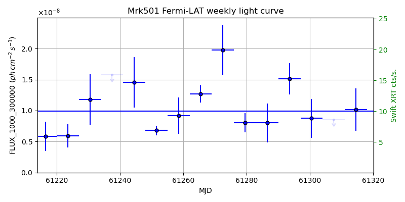

LAT Lightcurve site: https://fermi.gsfc.nasa.gov/ssc/data/access/lat/msl_lc/source/Mrk_501
Swift site: https://www.swift.psu.edu/monitoring/source.php?source=Mrk501
NED: Query
Time of last update of this page: UT: 2026-10-10 15:22 (MJD: 61323.641)
| Property | Value |
|---|---|
| R.A. | 16:53:52.32 |
| Dec. | 39:45:36.0 |
| z | 0.033 |
| 3FGL SpectrumType | PowerLaw |
| 3FGL PL Index | 1.72 |
| 3FGL Flux_100_300000 | 5.24e-08 1 / (s cm2) |
| 3FGL Flux_1000_300000 | 9.94e-09 1 / (s cm2) |
| 3FGL Flux >200 GeV | 2.19e-10 1 / (s cm2) |
| 3FGL Extrap. Crab >200 GeV | 0.93 |
| 3FGL Flux After EBL Absorption >200GeV | 1.76e-10 1 / (s cm2) |
| 3FGL EBL Crab Fraction >200GeV | 0.74 |

| MJD | dMJD | Flux | dFlux | Frac3FGL | FracCrab>200GeV | EBLFracCrab>200GeV |
|---|---|---|---|---|---|---|
| 61318.50 | 0.50 | 5.86e-08 | 0.00e+00 | 0.00 | 0.00 | 0.00 |
| 61319.50 | 0.50 | 1.53e-07 | 0.00e+00 | 0.00 | 0.00 | 0.00 |
| 61320.50 | 0.50 | 3.49e-07 | 0.00e+00 | 0.00 | 0.00 | 0.00 |
| 61321.50 | 0.50 | 4.10e-08 | 0.00e+00 | 0.00 | 0.00 | 0.00 |
| 61322.50 | 0.50 | 2.20e-07 | 0.00e+00 | 0.00 | 0.00 | 0.00 |

| MJD | dMJD | Flux | dFlux | Frac3FGL | FracCrab>200GeV | EBLFracCrab>200GeV |
|---|---|---|---|---|---|---|
| 61286.50 | 3.50 | 7.08e-08 | 8.97e-09 | 1.35 | 1.28 | 1.03 |
| 61293.50 | 3.50 | 8.31e-08 | 2.16e-08 | 1.58 | 1.50 | 1.20 |
| 61300.50 | 3.50 | 5.81e-08 | 2.00e-08 | 1.11 | 1.05 | 0.84 |
| 61307.50 | 3.50 | 1.02e-07 | 0.00e+00 | 0.00 | 0.00 | 0.00 |
| 61314.50 | 3.50 | 1.50e-07 | 4.45e-08 | 2.87 | 2.71 | 2.18 |

| MJD | dMJD | Flux | dFlux | Frac3FGL | FracCrab>200GeV | EBLFracCrab>200GeV |
|---|---|---|---|---|---|---|
| 61318.50 | 0.50 | 2.14e-08 | 0.00e+00 | 0.00 | 0.00 | 0.00 |
| 61319.50 | 0.50 | 6.29e-08 | 0.00e+00 | 0.00 | 0.00 | 0.00 |
| 61320.50 | 0.50 | 1.41e-08 | 0.00e+00 | 0.00 | 0.00 | 0.00 |
| 61321.50 | 0.50 | 9.68e-09 | 0.00e+00 | 0.00 | 0.00 | 0.00 |
| 61322.50 | 0.50 | 3.17e-08 | 0.00e+00 | 0.00 | 0.00 | 0.00 |

| MJD | dMJD | Flux | dFlux | Frac3FGL | FracCrab>200GeV | EBLFracCrab>200GeV |
|---|---|---|---|---|---|---|
| 61286.50 | 3.50 | 8.00e-09 | 3.16e-09 | 0.80 | 0.76 | 0.61 |
| 61293.50 | 3.50 | 1.51e-08 | 2.51e-09 | 1.52 | 1.44 | 1.16 |
| 61300.50 | 3.50 | 8.73e-09 | 3.17e-09 | 0.88 | 0.83 | 0.67 |
| 61307.50 | 3.50 | 8.54e-09 | 0.00e+00 | 0.00 | 0.00 | 0.00 |
| 61314.50 | 3.50 | 1.02e-08 | 3.42e-09 | 1.02 | 0.97 | 0.78 |
--------------------------------------------------------- Using user-supplied coords: 16:53:52.32 39:45:36.0 2000 --------------------------------------------------------- FLWO UT night of: 2026-10-11 Local Sid. @ Midnight: 00:55 Sunset (-15.0) (local, UT): 19:04 02:04 Sunrise (-15.0) (local, UT): 05:18 12:18 Moonrise (local, UT): Moonset (local, UT): Moon phase: 0.01 --------------------------------------------------------- AzTime LSID UT Obj_el Obj_az Mn_el Mn_az Sep. --------------------------------------------------------- 19:04 19:58 02:04 52.2 295.4 -16.1 264.2 73.4 19:34 20:29 02:34 46.4 296.2 -22.3 267.8 73.3 20:04 20:59 03:04 40.7 297.4 -28.5 271.5 73.2 20:34 21:29 03:34 35.1 299.0 -34.7 275.4 73.1 21:04 21:59 04:04 29.5 300.9 -40.8 279.7 73.0 21:34 22:29 04:34 24.1 303.1 -46.8 284.6 72.8 22:04 22:59 05:04 18.8 305.7 -52.7 290.5 72.7 22:34 23:29 05:34 13.7 308.5 -58.4 297.7 72.6 23:04 23:59 06:04 8.9 311.6 -63.6 307.3 72.4 23:34 00:29 06:34 4.3 315.1 -68.1 320.3 72.3 00:04 00:59 07:04 0.3 318.9 -71.3 338.2 72.2 00:34 01:29 07:34 -2.8 323.0 -72.6 0.4 72.0 01:04 01:59 08:04 -7.9 327.6 -71.5 22.7 71.9 01:34 02:30 08:34 -11.1 332.4 -68.3 40.8 71.8 02:04 03:00 09:04 -13.8 337.7 -63.9 54.1 71.7 02:34 03:30 09:34 -16.0 343.2 -58.7 63.8 71.5 03:04 04:00 10:04 -17.5 349.1 -53.1 71.2 71.4 03:34 04:30 10:34 -18.4 355.1 -47.3 77.2 71.3 04:04 05:00 11:04 -18.6 1.2 -41.4 82.2 71.2 04:34 05:30 11:34 -18.1 7.2 -35.3 86.6 71.2 05:04 06:00 12:04 -17.0 13.2 -29.2 90.6 71.1 05:18 06:14 12:18 -16.3 15.8 -26.5 92.4 71.1 --------------------------------------------------------- Dark hours >55 deg.: 0.00